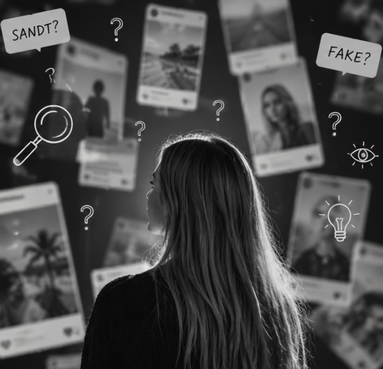

TRIVSEL ONLINE
Navigér kritisk online
Sociale medier kan være en fantastisk måde at holde kontakt, finde inspiration og lære noget nyt.
Men de kan også påvirke vores trivsel, selvværd og virkelighedsopfattelse.
Her får du viden og konkrete råd til, hvordan du kan navigere mere sikkert og bevidst i en digital hverdag.


Digital trivsel
Hvorfor påvirker sociale medier dit humør?
Har du nogensinde prøvet at føle dig lidt utilstrækkelig, efter at have scrollet gennem Instagram og TikTok?
Sociale medier kan påvirke, hvordan vi ser på os selv og andre. Vi møder hele tiden billeder af perfekte kroppe, fede oplevelser og liv, der er svære at sammenligne sig selv med.
Så husk: Det, du ser online, er kun et lille udsnit af virkeligheden!
Kilde: VIVE (2020), Børn og unges trivsel og brug af sociale medier.

AI og falsk indhold
Kan du se, hvad der er ægte?
AI kan skabe billeder, videoer og lyd, der alt sammen ser ægte ud. Derfor kan det være svært at skelne mellem ægte og manipuleret indhold.
Hvad nu, hvis personen i videoen aldrig har sagt det, du hørte på Tiktok?
Det er derfor det er så vigtigt at være kritisk, tjekke kilder og tænke sig om, før man deler noget videre.
Kilde: Red Barnet (u.å.). Hvordan påvirker kunstig intelligens børns og unges liv.
Algoritmer i dit feed
Hvorfor får du vist lige præcis det indhold?
Har du mon lagt mærke til, at dit feed på TikTok, Facebook eller Instagram, hurtigt bliver fyldt med noget du lige har set?
Sociale medier bruger algoritmer til at vælge, hvad du får i dit næste scroll. Algoritmen ser på hvad du lige har liket, delt eller brugt meget tid på at undersøge.
Det betyder også at to venner ikke nødvendigvis ser det samme indhold, selvom de bruger samme app.
Kilde: Børns Vilkår (2025). Forbrug i feed'et - børn som forbrugere i en digital tid.
VIDEN FRA RED BARNET
Når nettet ikke føles trygt
69%
Af børn og unge mellem 9 og 17 år havde oplevet mindst én digital krænkelse eller anden ubehagelig oplevelse online.
Det understreger, hvorfor det er vigtigt at behandle hinanden med respekt online og vide, hvad man kan gøre, hvis noget føles ubehageligt.
Kilde: Red Barnet (2024), undersøgelse om digitale krænkelser.